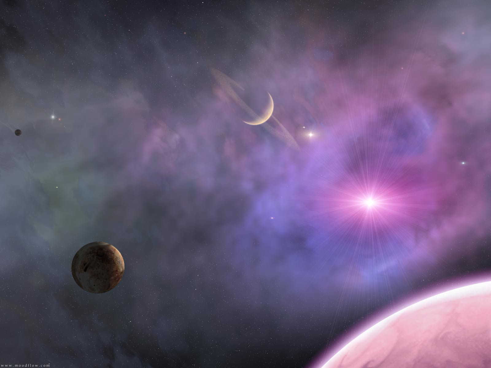

Debates concerning the nature, essence and the mode of existence of space date back to antiquity; namely, to treatises like the Timaeus of Plato, or Socrates in his reflections on what the Greeks called khora (i.e. "space"), or in the Physics of Aristotle (Book IV, Delta) in the definition of topos (i.e. place), or even in the later "geometrical conception of place" as "space qua extension" in the Discourse on Place (Qawl fi al-Makan) of the 11th-century Arab polymath Alhazen. Many of these classical philosophical questions were discussed in the Renaissance and then reformulated in the 17th century, particularly during the early development of classical mechanics. In Isaac Newton's view, space was absolute—in the sense that it existed permanently and independently of whether there were any matter in the space.
-
Oooooohhhhhh!
-

Ahhhhhh!
-
 Coool
Coool
-
Space In a nut-shell
Space is the boundless three-dimensional extent in which objects and events have relative position and direction. Physical space is often conceived in three linear dimensions, although modern physicists usually consider it, with time, to be part of a boundless four-dimensional continuum known as spacetime. In mathematics, "spaces" are examined with different numbers of dimensions and with different underlying structures. The concept of space is considered to be of fundamental importance to an understanding of the physical universe. However, disagreement continues between philosophers over whether it is itself an entity, a relationship between entities, or part of a conceptual framework.
Other natural philosophers, notably Gottfried Leibniz, thought instead that space was in fact a collection of relations between objects, given by their distance and direction from one another. In the 18th century, the philosopher and theologian George Berkeley attempted to refute the "visibility of spatial depth" in his Essay Towards a New Theory of Vision. Later, the metaphysician Immanuel Kant said neither space nor time can be empirically perceived, they are elements of a systematic framework that humans use to structure all experiences. Kant referred to "space" in his Critique of Pure Reason as being: a subjective "pure a priori form of intuition", hence it is an unavoidable contribution of our human faculties.
In the 19th and 20th centuries mathematicians began to examine non-Euclidean geometries, in which space can be said to be curved, rather than flat. According to Albert Einstein's theory of general relativity, space around gravitational fields deviates from Euclidean space. Experimental tests of general relativity have confirmed that non-Euclidean space provides a better model for the shape of space.
-
Relativity
Before Einstein's work on relativistic physics, time and space were viewed as independent dimensions. Einstein's discoveries showed that due to relativity of motion our space and time can be mathematically combined into one object — spacetime. It turns out that distances in space or in time separately are not invariant with respect to Lorentz coordinate transformations, but distances in Minkowski space-time along space-time intervals are—which justifies the name.
In addition, time and space dimensions should not be viewed as exactly equivalent in Minkowski space-time. One can freely move in space but not in time. Thus, time and space coordinates are treated differently both in special relativity (where time is sometimes considered an imaginary coordinate) and in general relativity (where different signs are assigned to time and space components of spacetime metric).
-
Movie Time!
| Why sign up for the news letter? | Details |
|---|---|
| Keep up to date | Find out what's going on up in space! |
| Get more content | Learn what NASA knows! |
| Learn how to make a telescope! :D | Make a home-made telescope by the pros! |